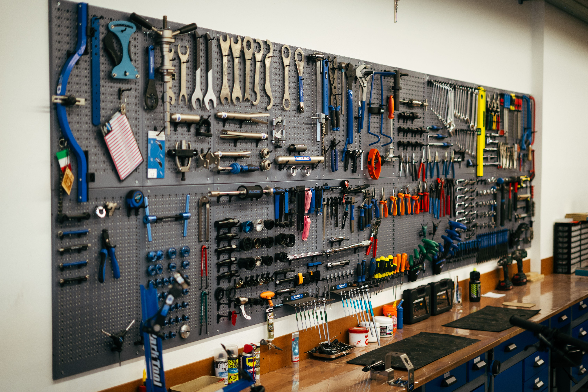
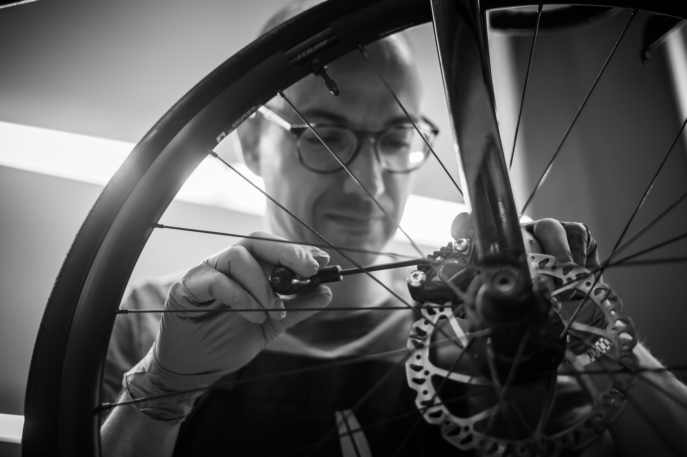

Officina specializzata e assistenza certificata E-bike a Brugnera. Dove ogni dettaglio conta.
Ciclofficina Mitch non è solo un'officina, è il punto di incontro tra innovazione tecnologica e passione artigianale. Da anni ci prendiamo cura delle vostre biciclette con la massima precisione, utilizzando esclusivamente componenti di alta qualità e strumentazioni professionali.
Siamo specializzati nel mondo E-bike con certificazioni ufficiali, garantendo diagnostica avanzata e soluzioni su misura per ogni esigenza, dalla bici da corsa al gravity estremo.

Dalla manutenzione ordinaria alla rigenerazione completa del tuo mezzo.
Diagnostica computerizzata, aggiornamenti firmware Bosch, Shimano e Brose. Riparazione circuiti e ottimizzazione batteria.
Ampia selezione di biciclette dei migliori brand. Consulenza tecnica pre-vendita e garanzia certificata Mitch.
Gestiamo ogni tipologia di bicicletta con competenza specifica.
"Sono molto soddisfatto della riparazione della mia bici, il tecnico è molto competente, professionista, affidabile e onesto."
"Ottima officina e Miguel molto competente. Finalmente un negozio 'serio' vicino a dove abito, con tempi veloci sugli ordini."
"Titolare molto gentile. Avevo necessità di riparare subito una ruota tubeless e ha provveduto immediatamente. Tornerò sicuramente!"
"Super in tutto: tempi, costi e competenza! Mi sono trovato benissimo sia per la manutenzione di bici classiche che elettriche."
Siamo pronti ad aiutarti. Passa in officina o scrivici per un preventivo.
Via Iginio Santarossa 15
Maron, Brugnera 33070 (PN)